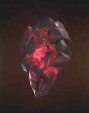

| Камень силы |
повышает силу, прочность и все остальные способности своего обладателя, а также питает остальные пять артефактов |
 |
| Камень разума |
одним из шести камней бесконечности, остатоком сингулярности, который был старше самой вселенной и представлял из себя ткань разума |
|
| Камень души |
один из шести камней бесконечности, остаток сингулярности, который предшествует Вселенной |
|
| Камень космоса |
один из Камней бесконечности, позволяющий своему владельцу существовать в любом окружающем пространстве |
 |
| Камень времени |
может манипулировать временем, даже в таких местах, в которых нет времени, как Тёмное измерение |
 |
| Камень реальности |
способен изменять реальность и ломать законы природы и логики |
 |